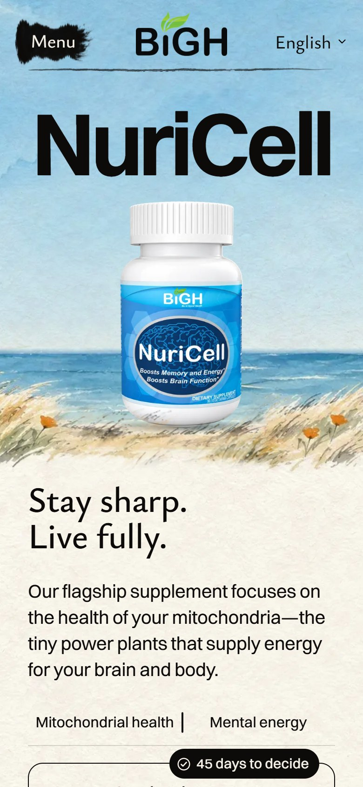
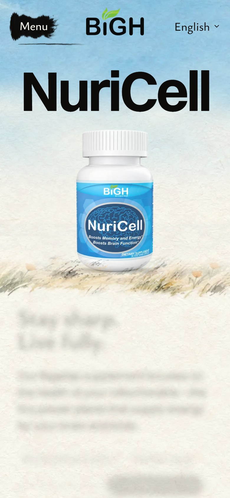

You picked A, a clear day. These are photos of the real NuriCell page, built and running on my computer. It is not live. Tap a wide picture to zoom in, tap again to zoom out.
My score: 8.5 out of 10. Your bar for a page’s main picture is 9, so read what holds it back before you decide.
Checked on the built site. All seven check suites pass: NuriCell 612 of 612, the other four product pages, the homepage and the menu bar with no failures.
BUILT
A clear day, on the real page
The name sits on the horizon. The real bottle stands in the grass on the bluff. As the page opens, the morning fog lifts, once.


Better than the mockup
A few blades of grass stand in front of the bottle’s foot, so it stands in the grass, not on top of the picture.
Phones now show poppies on both sides of the bottle. The mockup’s phone had only sea.
It fills very wide screens too, with no gap at the sides.
Holds it back
It can read as a beach holiday. That comes with the idea.
On very sharp screens the painting is a little soft next to the crisp bottle. The painter makes pictures only so big.
The fog is a soft white bank that fades. It is simple, and I judged it from still frames, so you should watch it move.
Not changed
Every word, the buy box, and the other four product pages.
TabletA big screen (1920 wide)
The three mockups you picked from
TODAY
What is live now
A
A clear day (mockup)
Your pick
B
Blue and gold
One brush stroke of the bottle’s own blue behind the name, a torn strip of gold leaf under the bottle.
C
Morning shade
The soft shadow of an oak branch across the page. No paint.
The built pictures are photos of the page as it ships (the built site on my computer), at 1600, 1920, 768 and 390 pixels wide. “Play how it opens” fades between two real photos: the first moment, then the page at rest.